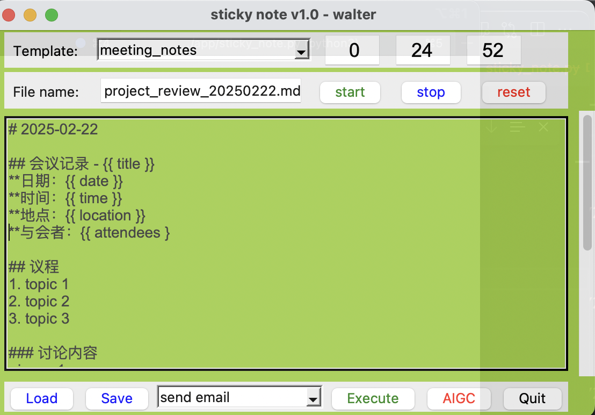

打造最适合自己的即时贴和笔记系统
Posted on Sat 15 February 2025 in Journal • 1 min read
| Abstract | 打造最适合自己的即时贴 |
|---|---|
| Authors | Walter Fan |
| Category | learning note |
| Status | v1.0 |
| Updated | 2025-02-15 |
| License | CC-BY-NC-ND 4.0 |
打造最适合自己的即时贴
印象笔记, 有道笔记, 还有什么笔记, 感觉都不太适合我, 在我所在的公司也不允许使用, 所以我决定自己写一个, 程序员最喜欢的就是造轮子.
这个便笺和笔记需要有什么功能呢?
- 可以放在手边, 始终浮动在屏幕最上面的便笺程序, 便笺内容可以通过自定义的模板来定制, 并保存在文本文件中
- 可以设置提醒, 能当做一个番茄钟使用
- 支持多个模板, 可以写日记, 博客, 以及会议纪录等等
- 可以调用常用的一些脚本和程序和脚本
- 支持与大模型集成, 例如调用 deepseek 来生成和润色笔记
为简单起见, 就通过 Python 自带的 Tkinter，我在周末打造了一个个人即时贴应用，实现上述我想要的功能
1. 功能简介
这款即时贴应用有以下主要功能：
- 创建便签：用户可以随时创建新的便签，方便记录突发的想法或待办事项。
- 便签管理：每个便签都可以单独编辑、移动、调整大小，确保高度的灵活性。
- 持久化存储：使用 YAML 配置文件保存用户的设置和便签内容，确保即使应用关闭，数据也能被恢复。
- 简洁界面：界面设计极简，不占用过多屏幕空间，同时能够灵活调整。
- 番茄钟功能: 可以启动,停止和重置番茄钟，帮助用户管理时间。
- 多模板支持: 可以创建多个不同的模板，方便用户定制自己的便签格式。
- 支持调用常用脚本和程序: 通过配置可以将常用的脚本和程序作为一个下列列表快速调用。
- 集成大模型: 可以与大模型集成，例如使用 deepseek 来生成和润色笔记。
应用的代码和配置文件分别在 主程序 和 配置文件 中可以找到。

2. 代码结构与实现
├── LICENSE
├── README.md
├── app
| ├── async_llm_client.py // 大模型客户端
| ├── common_util.py // 常用工具类
| ├── llm_service.py // 大模型服务
| ├── sticky_note.py // 主程序
| └── yaml_config.py // 配置文件工具类
|
├── etc
| ├── prompt_template.yaml // 提示词模板
| └──sticky_note.yaml // 默认配置文件
├── sticky_note.spec
└── start.sh // 启动脚本
python 脚本很简单, 具体代码就不做详细展示了 有兴趣的可以察看 https://github.com/walterfan/daily-sticky-note
3. Tkinter 的使用经验
Tkinter 是 Python 中最流行的 GUI 库之一，具有以下优点：
- 轻量级：Tkinter 内置于 Python，几乎不需要额外的安装，非常适合小型应用。
- 简单易用：提供了直观的 API，帮助开发者快速实现窗口、按钮、文本框等基本元素的交互功能。
- 跨平台支持：Tkinter 是跨平台的，可以在 Windows、macOS 和 Linux 上运行。
然而，Tkinter 也有一些局限性，尤其是在更复杂的图形界面设计方面。界面风格较为简单，且无法原生支持现代化的界面元素，如响应式布局和动画效果。
4. 未来扩展
尽管这个应用已经能够提供基本的便签功能，但仍然有许多可以改进和扩展的地方：
- AI自动补全功能：根据用户输入的关键字，根据所选择的模板文件, 自动生成日记, 博客, 或者会议记录。
- 云同步：通过云存储服务（如 Dropbox 或 Google Drive）实现便签的云端同步，保证数据的安全和多设备间的同步。
- 定时提醒：可以为每个便签设置提醒，帮助用户记住重要的事项。
- 便签分类与标签：通过标签或分类管理便签，让用户可以更高效地组织内容。
- 富文本编辑：支持富文本编辑，让用户可以添加格式化文本，如标题、段落、列表等。
- 高级搜索：提供高级搜索功能，让用户可以搜索和过滤便签。
- 导出功能：允许用户将便签导出为 PDF 或其他格式，方便分享和备份。
5. Tkinter 与其他 GUI 框架的比较
除了 Tkinter，还有许多流行的 GUI 框架可供选择，以下是几个常用框架的比较：
- PyQt：功能强大，界面美观，适用于大型桌面应用。然而，PyQt 的学习曲线较陡，且需要额外安装。
- Kivy：支持多平台，特别适合开发移动应用。它的界面设计和交互效果都非常现代，但可能会增加应用的复杂性。
- wxPython：跨平台支持好，界面风格接近原生应用，适用于开发复杂的桌面应用，但相较于 Tkinter 更加庞大。
总结来说，Tkinter 是一个非常适合快速开发简单桌面应用的框架，而如果你需要更复杂的界面效果或者跨平台支持，PyQt 和 Kivy 可能是更好的选择。
6. 总结
通过 Tkinter 打造个人即时贴应用，不仅可以提升个人效率，也可以作为学习 GUI 开发的实践项目。虽然 Tkinter 有一些局限性，但对于基本的便签功能来说，它已经足够强大。随着应用的不断发展，我们可以加入更多的功能，使其成为一个更强大的桌面应用。
本作品采用知识共享署名-非商业性使用-禁止演绎 4.0 国际许可协议进行许可。